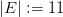
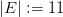
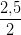
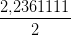
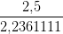
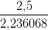
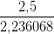
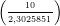

Figura 3.3: Ponto fixo g(x∗) = x∗.
Nesta seção, discutimos a abordagem da iteração do ponto fixo para a solução numérica de equações de uma variável real. Observamos que sempre podemos reescrever uma equação da forma f(x) = 0 (problema de encontrar os zeros de uma função) em uma equação equivalente na forma g(x) = x (problema de ponto fixo). Um ponto x = x∗ tal que g(x∗) = x∗ é chamado de ponto fixo da função g(x). Geometricamente, um ponto fixo de uma função é um ponto de interseção entre a reta y = x com o gráfico da função (veja, Figura 3.3).
Exemplo 3.3.1. Resolver a equação ex = x + 2 é equivalente a resolver f(x) = 0, com f(x) = ex − x − 2. Estes são equivalentes a resolver g(x) = x, com g(x) = ex − 2. Ou seja, temos:
|
|
Dada uma função g(x), a iteração do ponto fixo consiste em computar a seguinte sequência recursiva:
 |
onde x(1) é uma aproximação inicial do ponto fixo.
Exemplo 3.3.2 (Método babilônico). O método babilônico3 é de uma iteração de ponto fixo para extrair a raiz quadrada de um número positivo A, i.e. para resolver a equação x2 = A.
Seja r > 0 uma aproximação para  . Temos três possibilidades:
. Temos três possibilidades:

 <
<  
 ∈
∈


 =
= 

 >
> 

 ∈
∈
Ou seja, uma aproximação melhor para  está no intervalo entre r e
está no intervalo entre r e  que pode
ser aproximada como:
que pode
ser aproximada como:

Aplicando esse método repetidas vezes, podemos construir a iteração (de ponto fixo):

Por exemplo, para obter uma aproximação para  , podemos iniciar com a
aproximação inicial r = 2 e A = 5. Então, tomamos x(1) = 2 e daí seguem as
aproximações:
, podemos iniciar com a
aproximação inicial r = 2 e A = 5. Então, tomamos x(1) = 2 e daí seguem as
aproximações:
| x(2) = | +  = 2,25 | ||
| x(3) = |  + +  = 2,2361111 = 2,2361111 | ||
| x(4) = |  +  = 2,236068 | ||
| x(5) = |  +  = 2,236068 +  = 2,236068 |
O método babilônico sugere que a iteração do ponto fixo pode ser uma abordagem eficiente para a solução de equações. Ficam, entretanto, as seguintes perguntas:
A segunda pergunta é a mais fácil de ser respondida. No caso de g(x) ser contínua, se x(n) → x∗ ∈ Dom (g), então:
|
|
Antes de respondermos as perguntas acima, vejamos mais um exemplo.
Exemplo 3.3.3. Considere o problema de encontrar o zero da função f(x) = x exp(x) − 10. Uma maneira geral de construir um problema de ponto fixo equivalente é o seguinte:
|
|
para qualquer parâmetro α≠0. Consideremos, então, as seguintes duas funções:
 |
Notamos que o ponto fixo destas duas funções coincide com o zero de f(x). Construindo as iterações do ponto fixo:
|
|
tomando x1(1) = x 2(1) = 1,7, obtemos os resultados apresentados na Tabela 3.2. Observamos que, enquanto, a iteração do ponto fixo com a função g1(x) (α = 0,5) parece divergir, a iteração com a função g2(x) (α = 0,05) parece convergir.
| n | x1(n) | x 2(n) |
| 1 | 1,700 | 1,700 |
| 2 | 2,047 | 1,735 |
| 3 | −0,8812 | 1,743 |
| 4 | 4,3013 | 1,746 |
| 5 | −149,4 | 1,746 |
Afim de estudarmos a convergência da iteração do ponto fixo, apresentamos o Teorema do ponto fixo.
O Teorema do ponto fixo nos fornece condições suficientes para a existência e unicidade do ponto fixo, bem como para a convergência das iterações do método.
Observação 3.3.1. Seja g : [a,b] → [a,b], y=g(x).
Teorema 3.3.1 (Teorema do ponto fixo). Se g : [a,b] → [a,b] é uma contração, então existe um único ponto x∗ ∈ [a,b] tal que g(x∗) = x∗, i.e. x∗ é ponto fixo de g(x). Além disso, a sequência {x(n)} n∈ℕ dada por:
 |
converge para x∗ para qualquer x(1) ∈ [a,b].
Demonstração. Começamos demonstrando que existe pelo menos um ponto fixo. Para tal definimos a função f(x) = x − g(x) e observamos que:
 |
e
 |
Se f(a) = a ou f(b) = b, então o ponto fixo existe. Caso contrário, as desigualdades são estritas e a f(x) muda de sinal no intervalo. Como esta função é contínua, pelo teorema de Bolzano 3.1.1, existe um ponto x∗ no intervalo (a,b) tal que f(x∗) = 0, ou seja, g(x∗) = x∗. Isto mostra a existência.
Para provar que o ponto fixo é único, observamos que se x∗ e x∗∗ são pontos fixos, eles devem ser iguais, pois:
 |
A desigualdade |x∗ − x∗∗|≤ β|x∗ − x∗∗| com 0 ≤ β < 1 implica |x∗ − x∗∗| = 0.
Para demonstrar a convergência da sequência, observamos que:
 |
Daí, temos:
 |
Portanto, como 0 ≤ β < 1, temos:
 |
ou seja, x(n) → x∗ quando n →∞. __
Exemplo 3.3.4. Mostre que o Teorema do ponto fixo se aplica a função g(x) = cos(x) no intervalo [1∕2, 1], i.e. que a iteração do ponto fixo converge para a solução da equação cos x = x.
Solução. Basta mostrarmos que:
![([1∕2,1])](main311x.png) ⊆ [1∕2,1];
⊆ [1∕2,1];
Para provar a), observamos que g(x) é decrescente no intervalo, pelo que temos:
 |
Como [0,54, 0,88] ⊆ [0,5, 1], temos o item a).
Para provar o item b), observamos que:
 |
Da mesma forma, temos a estimativa:
 |
Assim, |g′(x)| < 0,85 temos a desigualdade com β = 0,85 < 1.
A Tabela 3.3 apresenta o comportamento numérico da iteração do ponto fixo:
| x(1) | = 0,7 | ||
| x(n+1) | = cos(x(n)), n ≥ 1. |
| n | x(n) |
| 1 | 0,700 |
| 2 | 0,765 |
| 3 | 0,721 |
| 4 | 0,751 |
| 5 | 0,731 |
| 6 | 0,744 |
| 7 | 0,735 |
Seja g : [a,b] uma função C0[a,b] e x∗ ∈ (a,b) um ponto fixo de g. Então x∗ é dito estável se existe uma região (x∗ − δ,x∗ + δ) chamada bacia de atração tal que x(n+1) = g(x(n)) é convergente sempre que x(0) ∈ (x∗ − δ,x∗ + δ).
Proposição 3.3.1 (Teste de convergência). Se g ∈ C1[a,b] e |g′(x∗)| < 1, então x∗ é estável. Se |g′(x∗)| > 1 é instável e o teste é inconclusivo quando |g′(x∗)| = 1.


Exemplo 3.3.5. No Exemplo 3.3.3 observamos que a função g1(x) nos forneceu uma iteração divergente, enquanto que a função g2(x) forneceu uma iteração convergente (veja a Figura 3.4. A razão destes comportamentos é explicada pelo teste da convergência. Com efeito, sabemos que o ponto fixo destas funções está no intervalo [1,6, 1,8] e temos:
![|g′(x)| = |1 − 0,5(x + 1)ex| > 4,8, ∀x ∈ [1,6,1,8],
1](main317x.png) |
enquanto:
![|g′2(x )| = |1 − 0,05 (x + 1)ex| < 0,962, ∀x ∈ [1,6,1,8].](main318x.png) |
A fim de compreendermos melhor os conceitos de estabilidade e convergência, considere uma função Φ(x) com um ponto fixo x∗ = g(x∗) e analisemos o seguinte processo iterativo:


Substituindo na relação de recorrência, temos


Observação 3.3.2. A análise acima, concluímos:
Na prática, quando se aplica uma iteração como esta, não se conhece de antemão
o valor do ponto fixo x∗. Assim, o erro ϵ
n =  precisa ser estimado com
base nos valores calculados x(n). Uma abordagem frequente é analisar a evolução
da diferença entre dois elementos da sequência:
precisa ser estimado com
base nos valores calculados x(n). Uma abordagem frequente é analisar a evolução
da diferença entre dois elementos da sequência:
A pergunta natural é: Será que o erro ϵn =  é pequeno quando
Δn =
é pequeno quando
Δn =  for pequeno?
for pequeno?
Para responder a esta pergunta, observamos que

Usamos também as expressões:


Observação 3.3.3. Tendo em mente a relação x(n+1) −x(n) ≈ (x(n) −x(n−1))g′(x∗), concluímos:
 e
e


E 3.3.1. Resolver a equação ex = x + 2 é equivalente a calcular os pontos fixos da função g(x) = ex + 2 (veja o Exemplo 3.3.1). Use a iteração do ponto fixo x(n+1) = g(xn) com x(1) = −1,8 para obter uma aproximação de uma das soluções da equação dada com 8 dígitos significativos.
Resposta. −1,8414057 ♢
E 3.3.2. Mostre que a equação:
 |
possui uma única solução no intervalo [0, 1]. Use a iteração do ponto fixo e encontre uma aproximação para esta solução com 4 dígitos significativos.
Resposta. 0,7391 ♢
E 3.3.3. Mostre que a equação xex = 10 é equivalente às seguintes equações:
 |
Destas, considere as seguintes iterações de ponto fixo:

Tomando x(1) = 1, verifique se estas sequências são convergentes.
Resposta. Tomemos x(1) = 1 como aproximação inicial para a solução deste problema, iterando a primeira sequência a), obtemos:
| x(1) | = 1 | ||
| x(2) | = ln  = 2,3025851 = 2,3025851 | ||
| x(3) | = ln  = 1,4685526 | ||
 | |||
| x(21) | = 1,7455151 | ||
| x(31) | = 1,745528 | ||
| x(32) | = 1,745528 |
Iterando a segunda sequência b), obtemos:
| x(1) | = 1 | ||
| x(2) | = 10e−1 = 3,6787944 | ||
| x(3) | = 10e−3,6787944 = 0,2525340 | ||
| x(4) | = 10e−0,2525340 = 7,7682979 | ||
| x(5) | = 10e−7,7682979 = 0,0042293 | ||
| x(6) | = 10e−0,0042293 = 9,9577961 |
Este experimento numérico sugere que a iteração a) converge para 1,745528 e a iteração b) não é convergente. ♢
E 3.3.4. Verifique (analiticamente) que a única solução real da equação:
 |
é ponto fixo das seguintes funções:

Implemente o processo iterativo x(n+1) = g(x(n)) para n ≥ 0 e compare o comportamento. Discuta os resultados com base na teoria estudada.
E 3.3.5. Verifique (analiticamente) que a única solução real da equação:
 |
é ponto fixo das seguintes funções:
Implemente o processo iterativo x(n+1) = g(x(n)) para n ≥ 0 e compare o comportamento.Discuta os resultados com base na teoria estudada.
E 3.3.6. Encontre a solução de cada equação com erro absoluto inferior a 10−6.
 = cos(x) no intervalo (0,1).
= cos(x) no intervalo (0,1).E 3.3.7. Encontre numericamente as três primeiras raízes positivas da equação dada por:
|
|
com erro absoluto inferior a 10−6.
Resposta. x > a com a ≈ 0,4193648. ♢
E 3.3.10. Considere os seguintes processos iterativos:
 | (3.1) |
Use o teorema do ponto fixo para verificar que cada um desses processos converge para a solução da equação x∗ de cos(x) = x. Observe o comportamento numérico dessas sequências. Qual estabiliza mais rápido com cinco casas decimais? Discuta.
Dica: Verifique que cos([0.5,1]) ⊆ [0.5,1] e depois a mesma identidade para a função f(x) = .4x + .6 cos(x).
E 3.3.11. Use o teorema do ponto fixo aplicado a um intervalo adequado para mostrar que a função g(x) = ln(100 − x) possui um ponto fixo estável.
E 3.3.12 (title=Fluidos). Na hidráulica, o fator de atrito de Darcy é dado pela implicitamente pela equação de Colebrook-White:
Resposta. 0.0431266 ♢
E 3.3.13. Encontre uma solução aproximada para equação algébrica

E 3.3.14. Considere que xn satisfaz a seguinte relação de recorrência:


E 3.3.15 (title=Convergência lenta). Considere o seguinte esquema iterativo:

E 3.3.16 (title=Convergência sublinear). Considere o seguinte esquema iterativo:
![x(n+1) = x(n) − [x(n)]3, x (n) ≥ 0](main363x.png)
E 3.3.17 (title=Taxa de convergência).
 ,1]. Construa um
método iterativo x(n+1) = g(x(n)) para encontrar esse ponto fixo. Use
o Scilab para encontrar o valor numérico do ponto fixo.
,1]. Construa um
método iterativo x(n+1) = g(x(n)) para encontrar esse ponto fixo. Use
o Scilab para encontrar o valor numérico do ponto fixo.
E 3.3.18 (title=Esquemas oscilantes). (Esquemas oscilantes)
 .
Verifique todo ponto fixo de g também é ponto fixo de ψ.
.
Verifique todo ponto fixo de g também é ponto fixo de ψ.

E 3.3.19 (title= Aceleração de convergência - introdução ao método de Newton). Mostre que se f(x) possui uma raiz x∗ então a x∗ é um ponto fixo de ϕ(x) = x + γ(x)f(x). Encontre uma condição em γ(x) para que o ponto fixo x∗ de ϕ seja estável. Encontre uma condição em γ(x) para que ϕ′(x∗) = 0.
E 3.3.20 (title=Aceleração de convergência - introdução ao método de Newton). Considere que x(n) satisfaz a seguinte relação de recorrência:

E 3.3.21. Considere o problema da questão 3.2.7 e dois seguintes esquemas iterativos.
![( [ ( (n))]
|{ I(n+1) = 1R- V − vtln 1 + IIR- ,n > 0
A | (0)
( I = 0
( e [ ( ) ]
|{ I(n+1) = I exp V−RI(n) − 1 ,n > 0
B R vt
|( I(0) = 0](main372x.png)